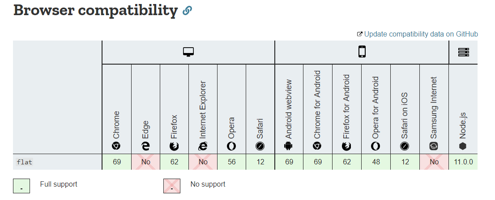

问题描述：
已知如下数组：
var arr = [ [1, 2, 2], [3, 4, 5, 5], [6, 7, 8, 9, [11, 12, [12, 13, [14] ] ] ], 10];
编写一个程序将数组扁平化去并除其中重复部分数据，最终得到一个升序且不重复的数组
解决问题：
思路： 扁平化处理 => 去重 => 升序
step1：
借助数组自带的flat函数进行扁平化处理var newArray =arr.flat(depth) //flat方法依赖浏览器支持，部分低版本浏览器可能不支持该方法
step2:
ES6提供了一个强大的数组去重方法 Set
var newArray =Array.from(new Set(arr))
step3:
常用排序 sort方法
var newArray =arr.sort((pre,next)=>{return pre - next})
Array.from(new Set(arr.flat(4))).sort((pre,next)=>{ return pre-next}) //低版本chrome不支持flat方法
还有一种简单的扁平化实现方法,但不太推荐：
Array.from(new Set(arr.toString().split(","))).sort((pre,next)=>{ return pre - next})
这样就实现了该功能，有没有其他方法也能实现该功能？
function flat(arr=[],res=[]){
return arr.reduce((pre,cur)=>{
if(Array.isArray(cur)){
flat(cur,pre) //递归实现扁平化
}else{
pre.push(cur)
}
return pre
},res)
}
function uniq(arr=[]){
return Array.from( new Set(arr))
}
function upper(arr=[]){
return arr.sort((pre,next)=>{
return pre-next
})
}
[flat,uniq,upper].reduce((pre,fn)=>{ //依次调用当前方法 并传入前一个函数返回的值
return fn(pre)
},arr)该方法是查阅得到，通过递归使数组扁平化，无需担心浏览器不支持flat的使用，结尾的方法调用个人非常喜欢